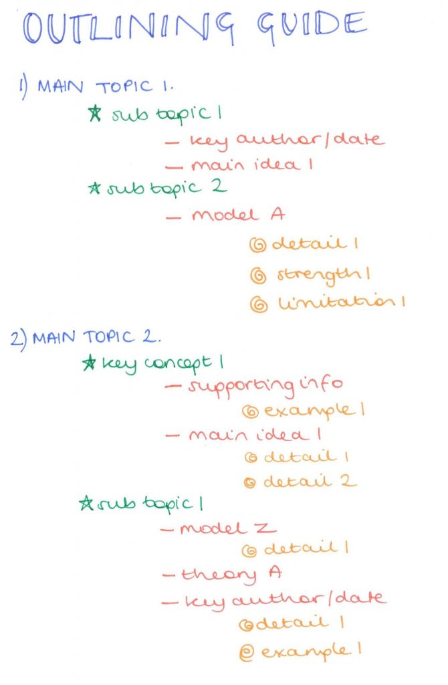
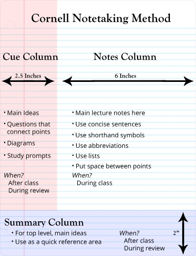
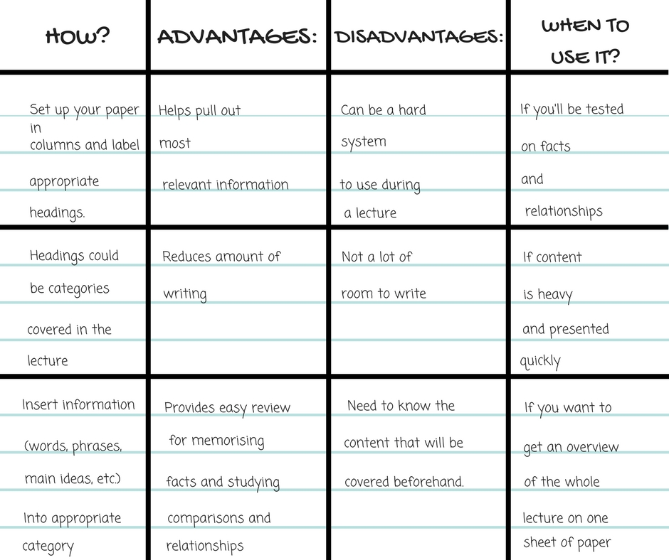
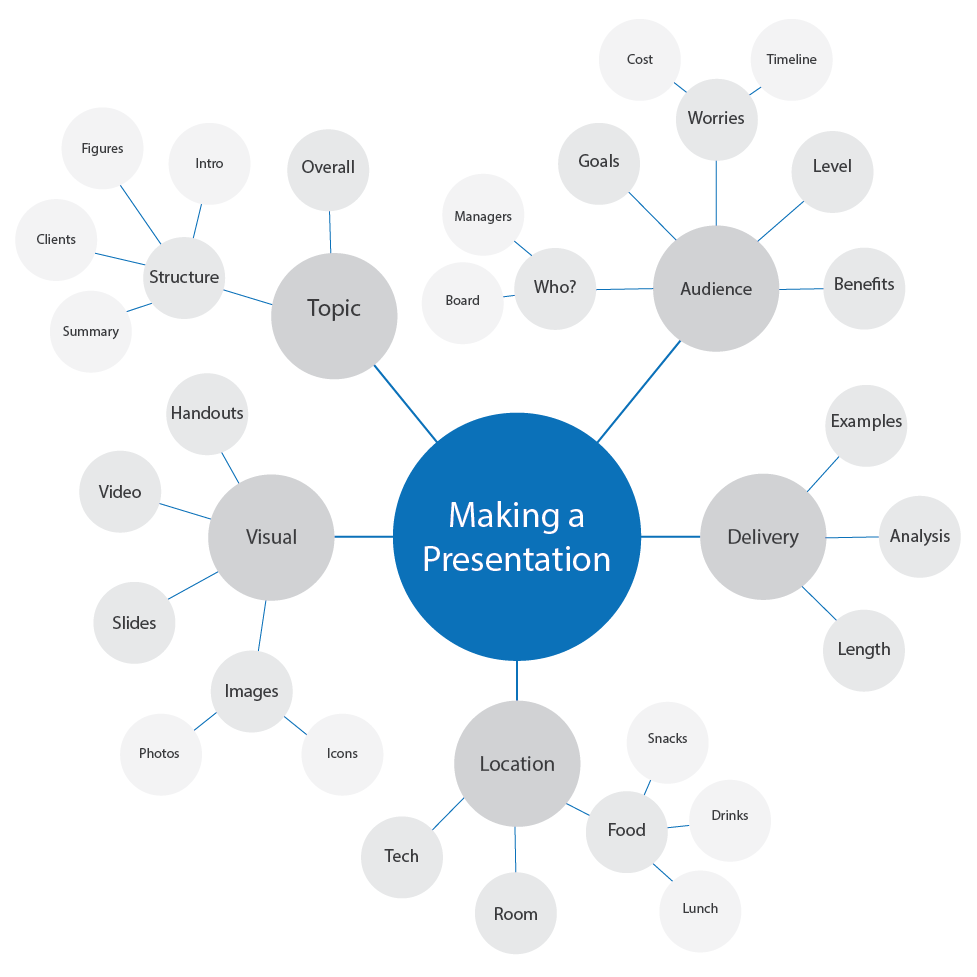

01
The Outline Method
The outline method is one of the best and easiest note-taking methods. It lets you organise your notes in a structured form, saving you a lot of time for reviewing and editing. This method requires you to structure your notes in the form of an outline by using bullet points to represent different topics and their subtopics. Start writing main topics on the far left of the page and add related subtopic in bullet points below using indents.

This method works best when the class follows a clear structure.
Pros
- Highlights the key points of the lecture in a logical way
- Ease of use allows the students to focus
- Reduces the reviewing and editing time
- Gives a proper and clean structure to your notes
Cons
- Not suitable for subjects like chemistry and math that comprise of formulas and charts
- Doesn’t work well if the class doesn’t follow a certain structure
02
The Cornell Method
The Cornell method is used for remembering key ideas. The page is divided into three or four sections starting from one row at the top for title and date (optional) and one at the bottom along with two columns in the center. 30% of width should be kept in the left column while the remaining 70% for the right column.

All notes from the class go into the main note-taking column. The smaller column on the left is for comments, questions or hints about the notes. The space at the bottom is used to summarise the notes.
Pros
- A quicker way to take, review, and organize your notes
- Summarizes all the information in a systematic manner
- Helps in effective learning as it enables to absorb information in a shorter time
- Helps you to extract main ideas
- Cuts down time for reviewing
Cons
- Pages need to be prepared before a class
- Requires some time for reviewing and summarising the key concepts
03
The Charting Method
This method is ideal for notes that involve a lot of information in the form of facts and statistics. The information is organised in several columns, similar to a table. Each column represents a category which makes the rows easily comparable.

Pros
- Information is clearly structured
- Fantastic for reviewing
- Notes are easily comparable
- A lot of information can be memorized rather quickly
Cons
- Very time-consuming method
- Barely makes sense to apply this method in a class where the content isn’t clear beforehand
- Doesn’t work for information that can’t easily be categorized
04
Mind mapping method
A mind map helps you to organise notes by dividing them into branches, enabling you to establish relationships between the topics. Start with writing the main topic at the top of the map. Keep dividing it into subtopics as you go down.

Pros
- Visually appealing
- Can be used for noting down detailed information but in a concise form
- Allows easy editing of the notes
Cons
- While mapping your notes, you might run out of space on a single page
- Can be confusing if the information is wrongly placed while taking notes
Note-taking is a crucial part of every student’s life and the way you do it can have a great impact on your studies and results. If your notes are messy, it can be difficult to review them and find important information before tests and exams. This is why you should consider these different ways to take notes effectively. Not only they will deepen your understanding of the information, speed up your revision, and improve your recall but they will also help you stay disciplined and organized, maximizing your chances to fetch good marks.